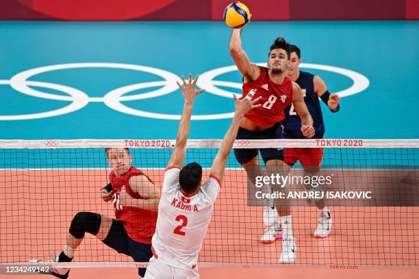
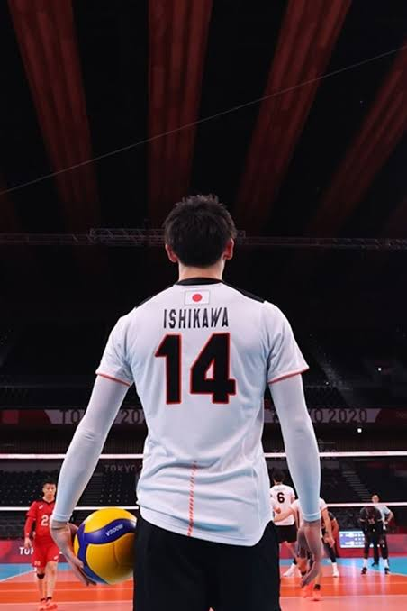

Voley: Un deporte de altura

Bienvenido a nuestra página sobre voleibol. Selecciona una sección:
1. Historia del Voleibol
2. Fundamentos Técnicos
3. Posiciones de los Jugadores
4. Modalidades del Voleibol
5. Reglamento Básico
6. Conoce Más
